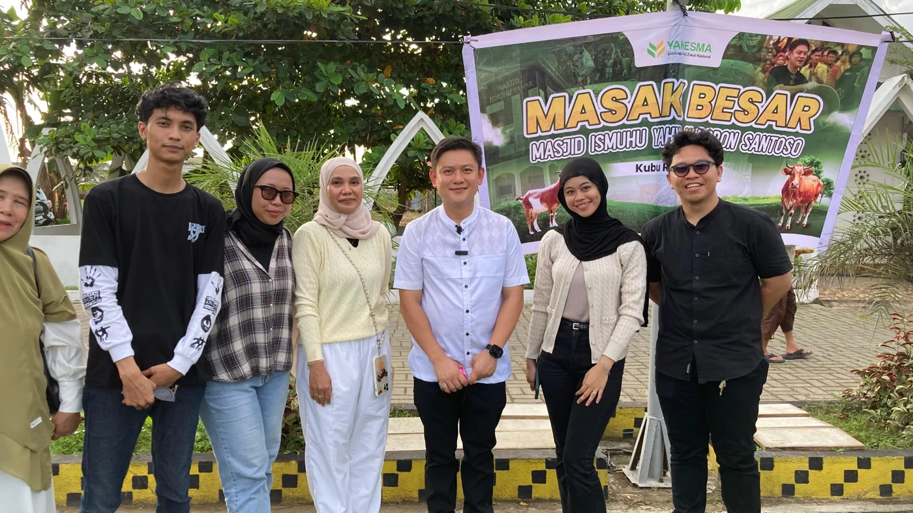
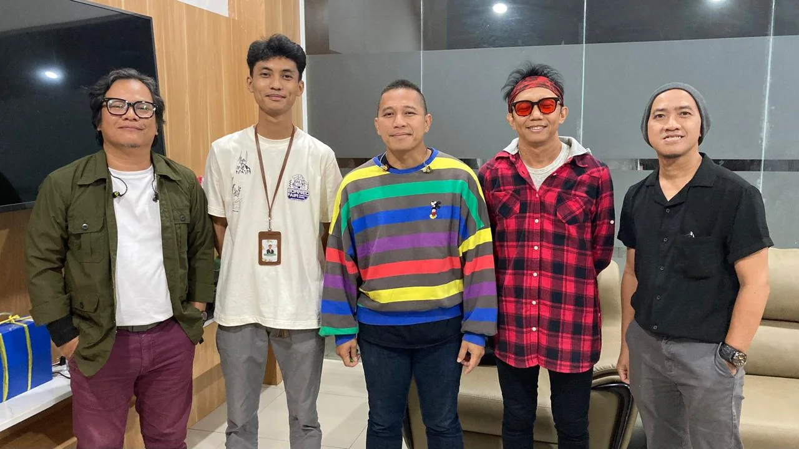
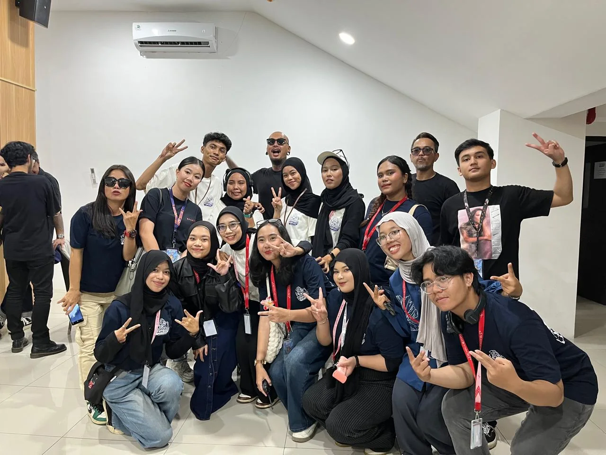
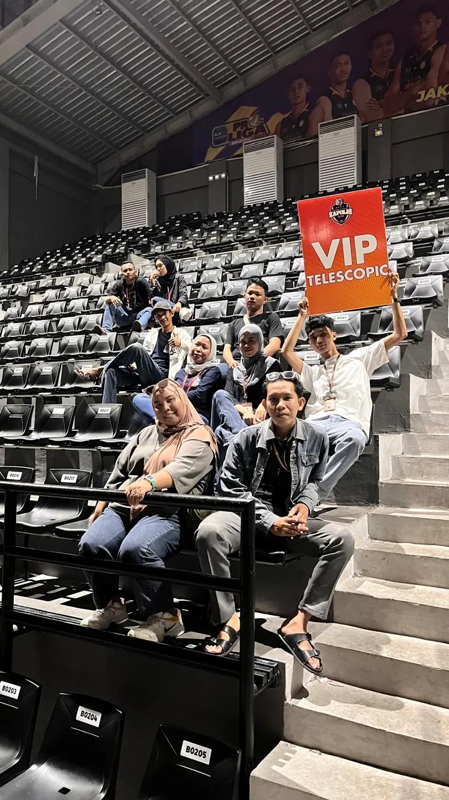
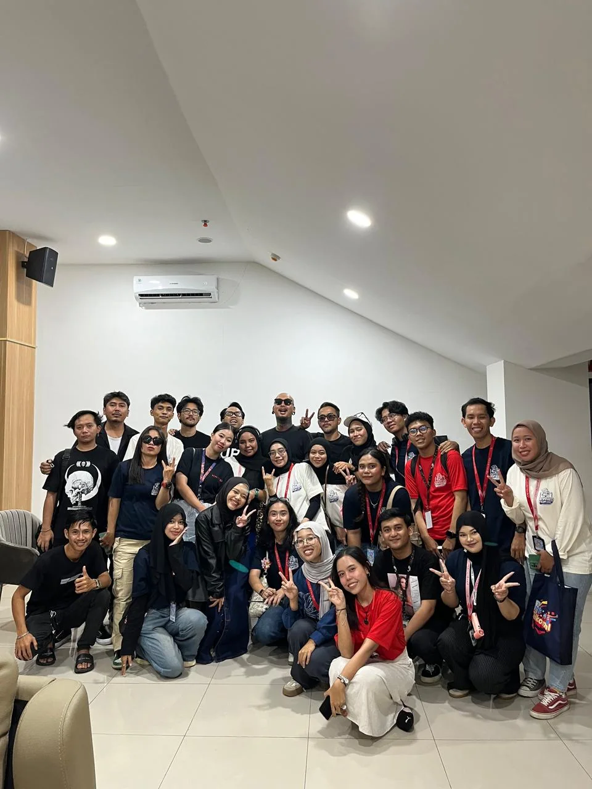
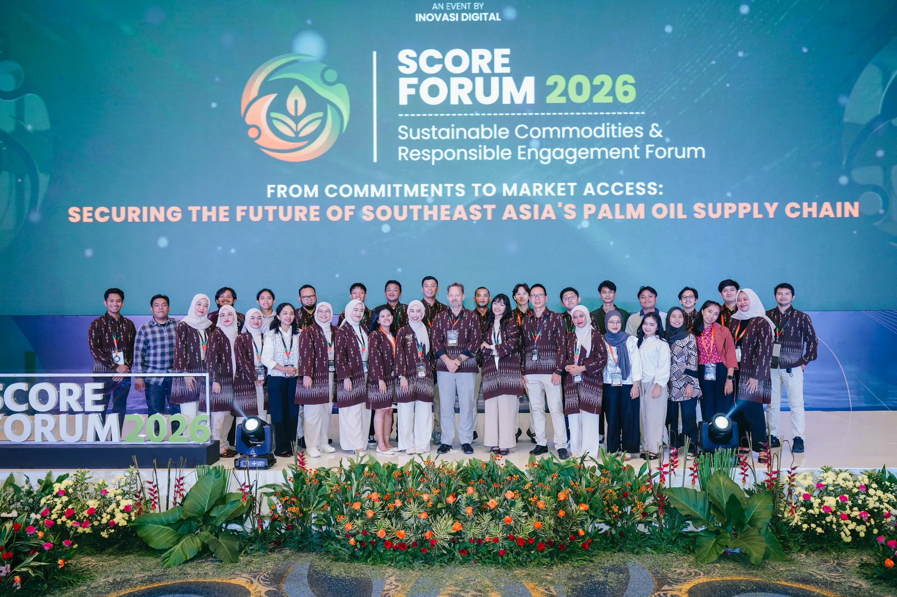
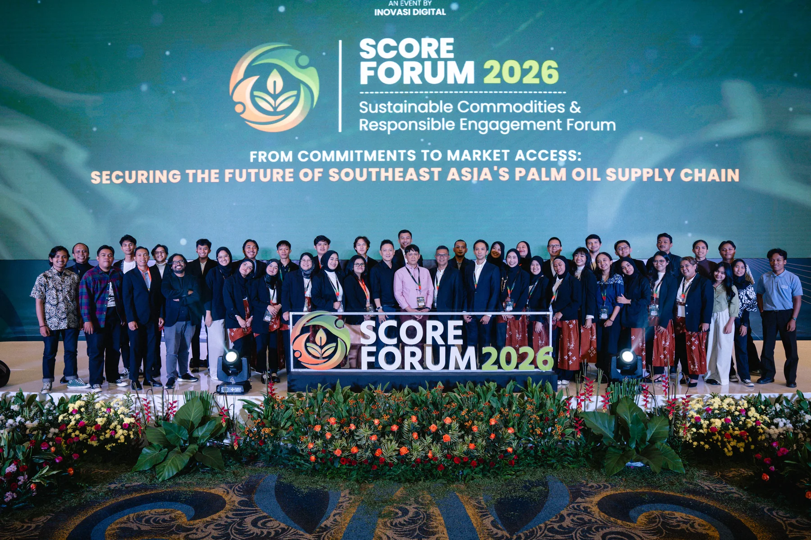
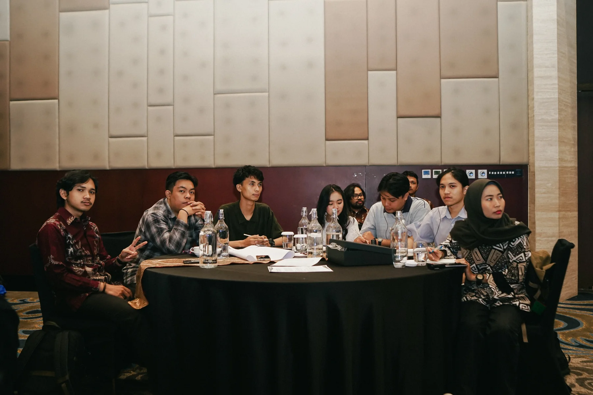
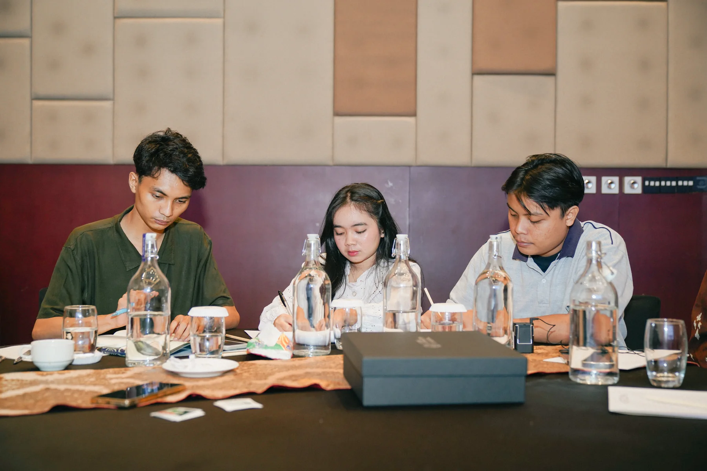
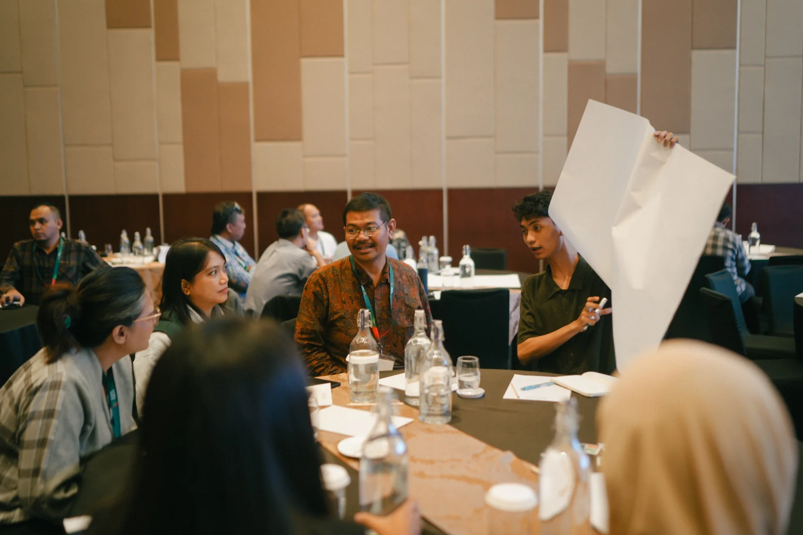

GIS & Data Analytics • Web GIS
Indonesia Geo Viewer
Sistem Informasi Geospasial Nusantara • React & TypeScript
Informatika × Desain × Pemasaran × Geospasial
Lulusan Informatika & Praktisi Teknologi yang menghubungkan 4 pilar kompetensi: IT & Web Development, Desain & Visual, Digital Marketing, serta GIS & Data Analytics. Pengembang Indonesia Geo Viewer, berfokus pada sistem informasi geospasial Nusantara, infrastruktur web modern, dan strategi kreatif digital.
Pontianak, Indonesia
Karya Unggulan Geospasial Nusantara
Sistem Informasi Geospasial Nusantara terpadu dengan 20+ layer data, citra satelit NASA FIRMS & BMKG real-time, serta analisis spasial interaktif.
Platform Web GIS modern karya Arya Sukma Putra Dwika yang menggabungkan keahlian IT & Web Development, GIS & Data Analytics, serta Desain & Visual dalam satu dashboard performa tinggi berbasis MapLibre GL dan React untuk analisis spasial dan mitigasi kebencanaan nasional.
Deteksi titik panas (hotspot) kebakaran hutan multi-sensor satelit Suomi-NPP, NOAA-20 & NOAA-21.
Peringatan dini gempa bumi real-time, status tsunami, dan polygon peringatan cuaca ekstrem CAP.
Polygon batas resmi Badan Informasi Geospasial (BIG STIG) termasuk pemekaran wilayah Nusantara.
Tutupan tajuk pohon, sebaran lahan gambut, habitat mangrove, & konsesi perkebunan/HTI.
Impor mandiri berkas GeoJSON & ZIP Shapefile (.shp, .dbf, .prj) langsung di sisi klien.
Visualisasi aliran partikel angin beranimasi halus dengan data pergerakan atmosfer global.
Data satelit resolusi 375m dari instrumen VIIRS pada satelit Suomi-NPP, NOAA-20, dan NOAA-21 disaring secara real-time untuk memantau indikasi kebakaran hutan dan lahan (karhutla) di seluruh Indonesia.
Data polygon administrasi bersumber langsung dari Badan Informasi Geospasial (BIG STIG Feature Layer), memuat seluruh 38 provinsi di Indonesia termasuk 4 provinsi baru di wilayah Papua.
Integrasi feed langsung BMKG TEWS (Indonesia Tsunami Early Warning System) dan USGS Seismicity API untuk pemantauan gempa bumi real-time di sepanjang zona subduksi lempeng Nusantara.
Fitur canggih bagi praktisi GIS untuk memasukkan dan menganalisis berkas geospasial lokal langsung di browser. File diproses di memori klien tanpa harus diunggah ke server pihak ketiga.
Portofolio pilihan
Proyek teknologi, sistem informasi geospasial, presentasi, dan karya video. Dua sisi keahlian yang saling melengkapi.
GIS & Data Analytics • Web GIS
Sistem Informasi Geospasial Nusantara • React & TypeScript
GIS & Data Analytics • Inovasi Digital
Ketertelusuran rantai pasok & akses pasar berkelanjutan • LinkedIn
GIS & Data Analytics • 0°Latitude
Program talenta muda geospasial, AI & pemetaan lingkungan • LinkedIn
Algoritma & klasifikasi
Shopee Express · Pontianak Utara
Machine learning
Random Forest Regression
Web & sistem keputusan
Sistem pendukung keputusan berbasis web · SAW
Video kegiatan
Universitas Muhammadiyah Pontianak
Video kegiatan
PKKMB FTIK UM Pontianak 2020 & 2021
Video profil
Video profil program studi
Video kegiatan
PKKMB FTIK UM Pontianak 2022
Video perusahaan
Video ucapan perusahaan
Video kreatif
Video cerita dan pesan reflektif
Perjalanan profesional
Pengembangan teknologi, komunikasi digital, dan kolaborasi dalam beragam lingkungan kerja.
Pengalaman kerja
2026
Inovasi Digital
2026
PT Alfasyimar Visual Technology
2025–2026
Instagram @genz.medianetwork & @localhits_pnk
2025
PT Firman's Group
Bertanggung jawab dalam pembangunan dan optimalisasi infrastruktur web perusahaan.
2022 – 2024
Divisi Infokom Univ. Muhammadiyah Pontianak
Mengelola strategi komunikasi digital dan informasi di lingkungan universitas.
2024
PT Karya Bujang Abadi
Prestasi & kegiatan
Mengikuti program pengembangan talenta selama 4 bulan yang berfokus pada GIS, Remote Sensing, AI, analisis risiko, dan pengolahan data untuk mendukung monitoring lingkungan, keberlanjutan, serta pengambilan keputusan berbasis data.
Merancang strategi pemasaran digital dan manajemen event skala besar, sekaligus berperan dalam aspek IT Development dan Digital Marketing.
Berpartisipasi dalam ajang tingkat nasional di lingkungan PTMA, menunjukkan komitmen pada pengembangan kompetensi mahasiswa.
Terlibat aktif dalam inovasi mahasiswa yang didanai pemerintah, berkontribusi pada ide kreatif dan implementasi program.
Berperan dalam penyelenggaraan demokrasi sebagai anggota KPPS, memastikan kelancaran proses pemungutan suara di tingkat lokal.
Keahlian & perangkat
Dari merawat sistem sampai menyampaikan cerita. Keahlian yang saya bawa ke setiap pekerjaan.
Di balik pekerjaan
Dokumentasi dari pertemuan dan kegiatan.
12 foto · pilih untuk memperbesar









